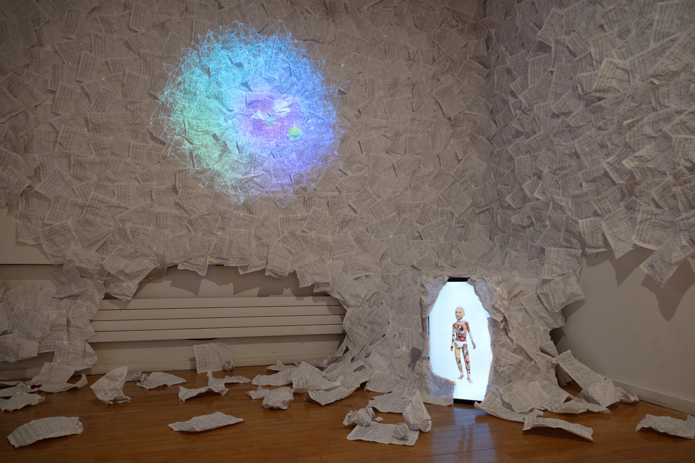
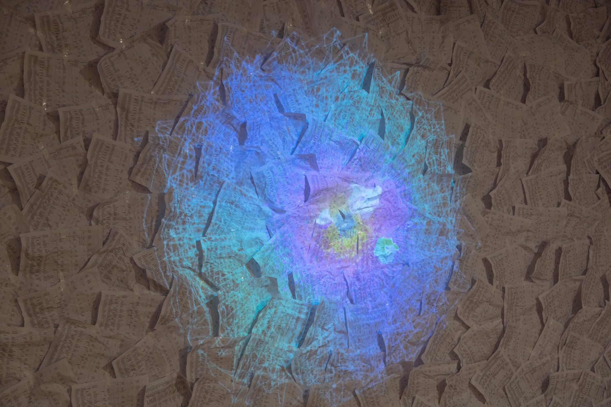
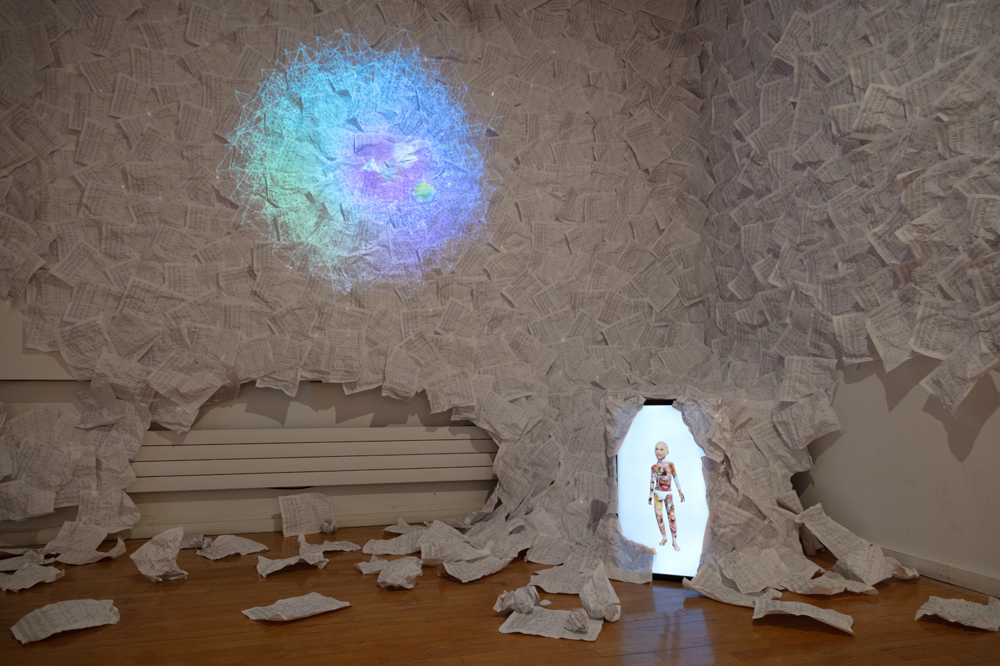
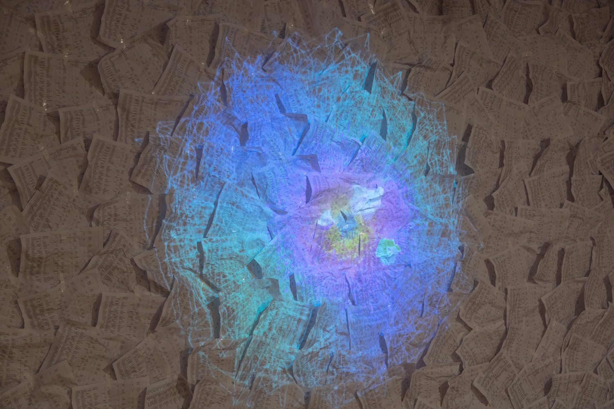
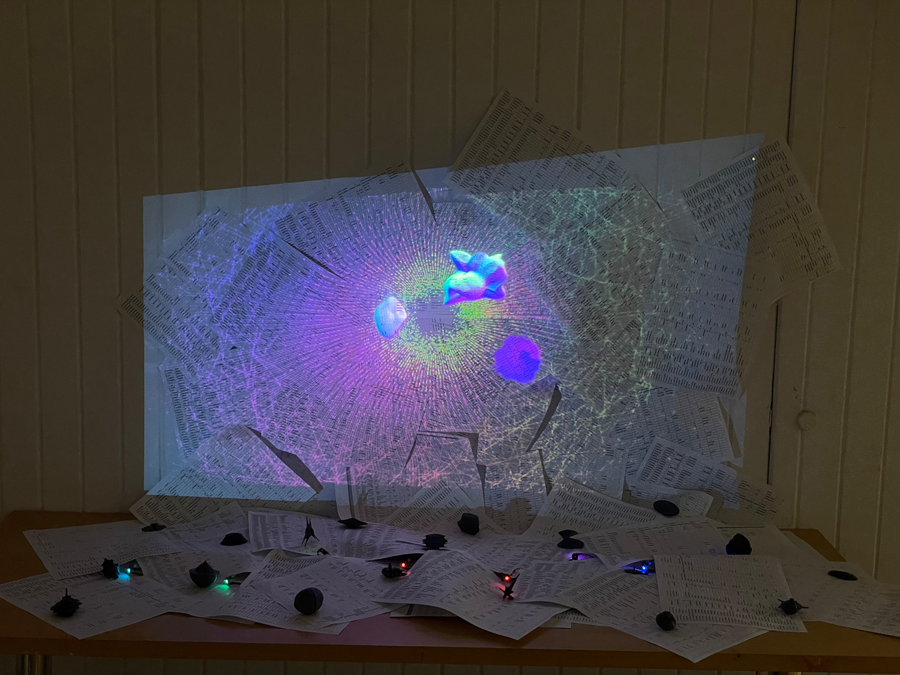
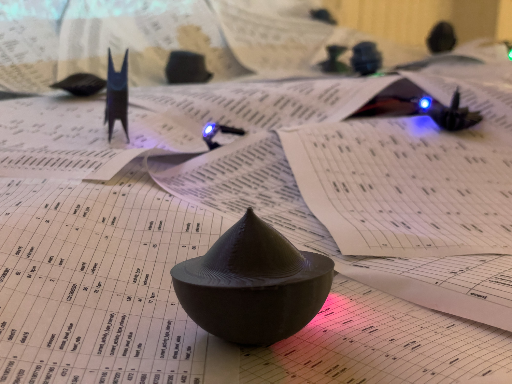
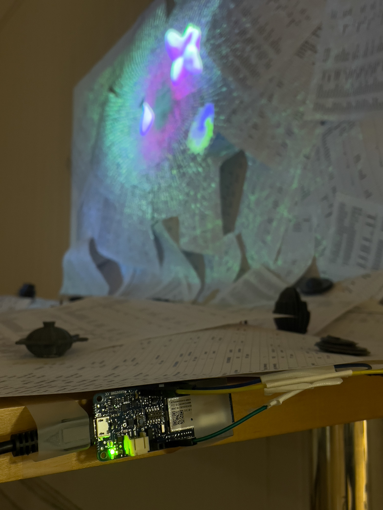
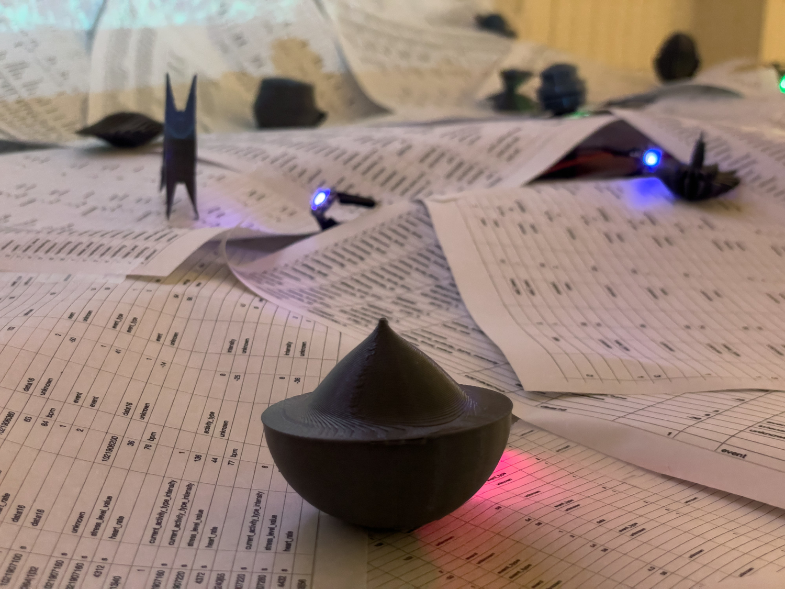
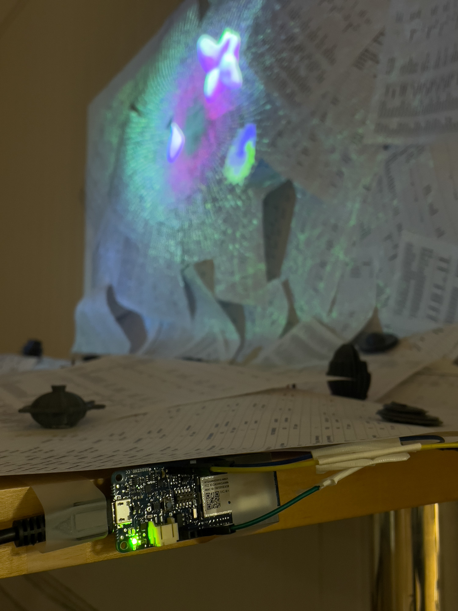

Aliens of Me, Installation, 2023-2024
A site-specific installation consists of the datasheets of my health data, a projection of the data visualization, and a virtual avatar. A self-exploration within physical and virtual spaces, as the data is constructing a live animation, a dynamic avatar, and an expanding physical body.
Animations included in the installation:
 



Aliens of Me, Installation, 2024-2025
An installation consists of data sheets of my body data captured by the smartphone, QR codes with AR animations, VR experience, and an interactive animation of an avatar. It is about an avatar reconstructing his identity based on my personal data. This installation is an interplay between real and virtual with an immersive and interactive environment.
Animations included in the installation:


IO (I/O) Playground, Interactive Installation, Ongoing
Interactive sculpture/installation consisting of data sheets of my health data, web-based animation of data visualization (projection mapping on the data sheets), audio of generated sound with the health data, 3D printings of generated shapes with the health data, sensors and actuators with Arduino. I intend to interact my data with the audience’s data from sensors.


 


